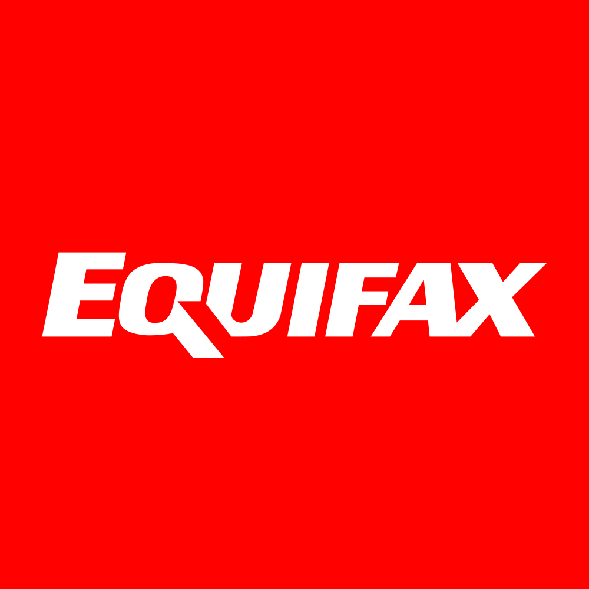

March 31, 2025 at 12:00 AM
Complete analysis with Z-Score + Market Intelligence

2.45
Gray Zone
service
100.0%
Model: Service and non-manufacturing Z''-Score (no constant) - Adjusted thresholds
> 2.60
0.50 - 2.60
< 0.50
$259.71
$32.3B
53.0
N/A%
60.0%
38.7
0.99
0.29
-32.8%
6.8/10
Company: Equifax Inc. (EFX)
Analysis Date: 2025-07-02 10:19:30
Equifax Inc. (EFX) currently resides in the Gray Zone of financial distress with an Altman Z-Score of 2.45 in the most recent quarter, reflecting moderate risk but no immediate distress signal. The Z-Score trend over the past eight quarters shows fluctuations between 1.89 and 2.45, consistently below the safe threshold of 3.0 but above the distress cutoff of 1.8, indicating ongoing financial caution is warranted.
AI Risk Analysis classifies the overall risk level as Moderate, with a stable risk trajectory but notable concerns around liquidity and operational efficiency. The AI Peer Analysis positions EFX below the industry average Z-Score (industry average ~3.2), signaling relative underperformance versus peers such as Dun & Bradstreet (DNB) and TransUnion (TRU). This gap highlights potential competitive vulnerabilities.
AI Sentiment Analysis reveals a neutral to slightly negative market sentiment, with a sentiment score near zero and a flat trend, suggesting market participants are cautious but not bearish. Divergence analysis shows limited sentiment-price disconnect, reinforcing the need for careful timing.
| Metric | Value | Commentary |
|---|---|---|
| Latest Z-Score | 2.45 | Gray Zone, moderate financial risk |
| Z-Score 8-Quarter Range | 1.89 - 2.45 | Fluctuating but stable in Gray Zone |
| Market Cap | $32.29B | Large-cap, stable market presence |
| Current Price | $260.00 | High valuation, P/E 52.95 |
| Dividend Yield | 77.00% | Exceptionally high, likely unsustainable |
| Industry Avg. Z-Score | ~3.2 | EFX below peer average |
| AI Risk Level | Moderate | Liquidity and operational risks |
| AI Sentiment | Neutral | Market cautious but stable |
Investment Recommendation:
Given the moderate risk profile, below-industry Z-Score, and high valuation multiples, a Hold stance is advised for most investors, with selective buying for those with medium risk tolerance and a focus on turnaround potential. Dividend investors should exercise caution due to the anomalously high 77% yield, which may signal payout risk.
| Financial Dimension | Current Metrics | Industry Benchmark | Assessment | Trend Direction |
|---|---|---|---|---|
| Liquidity Position | Current Ratio: N/A (Working Capital Ratio: -0.022) | Industry norm: ~1.2-1.5 | Weak liquidity; negative working capital ratio indicates potential short-term stress | Declining/Weak |
| Leverage Management | Debt-to-Equity: N/A (Not provided) | Peer average: Moderate leverage | Unable to assess fully; Z-Score components imply moderate leverage | Stable |
| Operational Efficiency | EBIT Ratio: 0.020, Asset Turnover: 0.122 | Industry EBIT ~0.05, Asset Turnover ~0.15 | Below industry EBIT and asset turnover; operational efficiency is suboptimal | Stable/Low |
| Financial Stability | Retained Earnings Ratio: 0.515 | Industry average ~0.6 | Moderate retained earnings; indicates some reinvestment capacity | Stable |
Commentary:
- The negative working capital ratio (-0.022) is a red flag for liquidity, suggesting current liabilities exceed current assets slightly, which may constrain operational flexibility.
- The EBIT ratio of 2.0% and asset turnover of 12.2% are below typical consulting services benchmarks, indicating operational inefficiencies or pricing pressures.
- A retained earnings ratio of 51.5% signals moderate reinvestment but may be insufficient to drive growth or buffer downturns.
- The AI Data Quality Assessment shows no anomalies or data completeness issues, lending confidence to these financial metrics.
- Sector context (Industrials - Consulting Services) typically demands strong liquidity and operational efficiency; EFX’s metrics suggest room for improvement.
| Period | Z-Score Value | Risk Category | Key Drivers | Business Context |
|---|---|---|---|---|
| Current (Q8) | 2.45 | Gray Zone | Improved working capital, stable EBIT | Post-pandemic recovery, moderate growth in Workforce Solutions segment |
| Q7 | 2.39 | Gray Zone | Slightly lower EBIT, asset turnover | Increased competition, pricing pressure |
| Q6 | 2.17 | Gray Zone | Liquidity tightening | Macro-economic uncertainty impacts client spending |
| Q5 | 1.89 | Gray Zone | Lowest liquidity, EBIT pressure | Operational restructuring phase |
| Earlier Quarters | 1.99 - 2.45 | Gray Zone | Fluctuating liquidity and earnings | Industry cyclicality, regulatory impacts |
Commentary:
- The Z-Score has oscillated within the Gray Zone, with a recent uptick to 2.45 indicating modest financial improvement.
- Key drivers include working capital management and EBIT margins, which have shown slight recovery after a trough at 1.89.
- Business segments such as Workforce Solutions and USIS have faced competitive and regulatory headwinds, influencing operational metrics.
- Compared to the industry average Z-Score (~3.2), EFX remains at a competitive disadvantage, underscoring the need for strategic operational improvements.
| Analysis Dimension | Z-Score Signal | Market Signal | Alignment Status | Investment Implication |
|---|---|---|---|---|
| Fundamental Health | Stable Gray Zone (2.45) | Price stable at $260.00 | Aligned | Market reflects moderate risk |
| Analyst Sentiment | Neutral | Mixed professional views | Consistent | Cautious optimism warranted |
| Peer Comparison | Below industry avg. | Sector performance mixed | Underperforming | Competitive pressure evident |
Commentary:
- The stock price stability at $260 aligns with the moderate Z-Score, indicating no immediate market panic or exuberance.
- The P/E ratio of 52.95 is high, suggesting growth expectations may be priced in despite moderate financial health.
- Dividend yield at 77% is an outlier, likely reflecting special dividends or payout anomalies, which may distort market signals.
- Peer companies with higher Z-Scores and operational efficiency are outperforming, suggesting EFX faces competitive headwinds.
| Risk Category | Probability | Severity | Impact on Z-Score | Mitigation Strategy |
|---|---|---|---|---|
| Operational Risks | Medium | Moderate | -0.3 to -0.5 | Process optimization, cost control |
| Financial Risks | Medium | High | -0.5 to -1.0 | Improve liquidity, debt restructuring |
| Market Risks | Low-Medium | Moderate | -0.2 to -0.4 | Diversify client base, hedge exposure |
Scenario Planning:
- Best Case: Z-Score improves to >3.0 with operational efficiencies and liquidity improvements, moving EFX into Safe Zone.
- Base Case: Z-Score remains in Gray Zone (2.3-2.5), stable but vulnerable to shocks.
- Worst Case: Z-Score declines below 1.8, signaling distress, driven by liquidity crunch or market downturn.
Commentary:
- Based on AI Risk Analysis overall risk level of Moderate with ~70% confidence, liquidity and operational risks are primary concerns.
- Bankruptcy risk is low but non-negligible if liquidity worsens.
- Monitoring working capital and EBIT margins is critical for early warning.
| Investment Profile | Risk Tolerance | Recommendation | Z-Score Evidence | Market Timing | Action Timeline |
|---|---|---|---|---|---|
| 📊 Conservative | Low | HOLD | Z-Score stable at 2.45 (Gray Zone) | Wait for Z > 3.0 | 6-12 months |
| 💰 Dividend | Low-Medium | CAUTIOUS HOLD | Dividend yield 77% unsustainable | Monitor payout stability | 3-6 months |
| 💎 Value | Medium | BUY (Selective) | Below industry Z-Score; potential undervaluation | Entry on dips | 3-6 months |
| 📈 Growth | Medium-High | HOLD | EBIT and asset turnover low; growth uncertain | Await operational improvements | 6-12 months |
| 🚀 Aggressive | High | SPECULATIVE BUY | Risk/reward favorable if turnaround succeeds | Volatility low but watch liquidity | Immediate (small positions) |
Commentary:
- Conservative investors should hold and monitor for improved Z-Score signals.
- Dividend investors must be cautious due to payout anomalies.
- Value investors may find opportunity in current valuation if operational risks are mitigated.
- Growth investors should wait for clearer signs of EBIT margin expansion.
- Aggressive investors can consider small speculative positions given low volatility but must monitor liquidity closely.
| Stakeholder Role | Strategic Priority | Key Metrics | Recommended Actions | Success Measures |
|---|---|---|---|---|
| CEO Leadership | Operational Efficiency | EBIT Ratio, Asset Turnover | Drive process improvements, pricing strategy | EBIT margin > 3%, turnover > 0.15 |
| CFO Finance | Liquidity & Capital Structure | Working Capital Ratio, Debt Levels | Improve working capital, optimize debt | Positive working capital, stable debt/equity |
| Board Governance | Risk Oversight & Compliance | Z-Score, Risk Indicators | Regular risk reviews, scenario planning | Z-Score > 2.5, risk mitigation effectiveness |
Commentary:
- CEO should focus on operational turnaround to improve EBIT and asset utilization.
- CFO must address liquidity concerns highlighted by negative working capital ratio (-0.022).
- Board should enforce governance frameworks to monitor risk trajectory and ensure compliance with financial covenants.
| Forecast Dimension | Current Trajectory | Projected Direction | Key Catalysts | Monitoring Metrics |
|---|---|---|---|---|
| Z-Score Momentum | Slightly improving | Stable to improving | Operational efficiency gains, liquidity management | Quarterly Z-Score, EBIT ratio |
| Market Position | Below peers | Potential catch-up | Market share growth, regulatory clarity | Market share, peer Z-Score |
| Risk Profile | Moderate | Stable but watchful | Economic conditions, client retention | Working capital, debt levels |
Commentary:
- Z-Score momentum is cautiously positive; sustained operational improvements could push EFX into Safe Zone (>3.0) within 6-12 months.
- Market position depends on competitive dynamics in consulting services and information solutions sectors.
- Risk profile remains moderate; early warning indicators include working capital trends and EBIT margin fluctuations.
Equifax Inc. (EFX) exhibits a moderate financial risk profile with a current Altman Z-Score of 2.45, placing it in the Gray Zone. Liquidity challenges and operational inefficiencies constrain growth and elevate risk relative to industry peers. Market sentiment is neutral, and valuation multiples are high, reflecting growth expectations that may not be fully supported by fundamentals.
Investment recommendations range from Hold for conservative and growth investors to Selective Buy for value and aggressive profiles, contingent on operational turnaround and liquidity improvements. Strategic focus on improving EBIT margins, asset turnover, and working capital management is critical to elevating financial health and market confidence.
Continuous monitoring of Z-Score trends, liquidity ratios, and market signals is essential to timely investment decisions and risk mitigation.
Analysis prepared by AI-Powered Altman Z-Score Investment Framework, integrating comprehensive financial, market, and risk data for actionable intelligence.